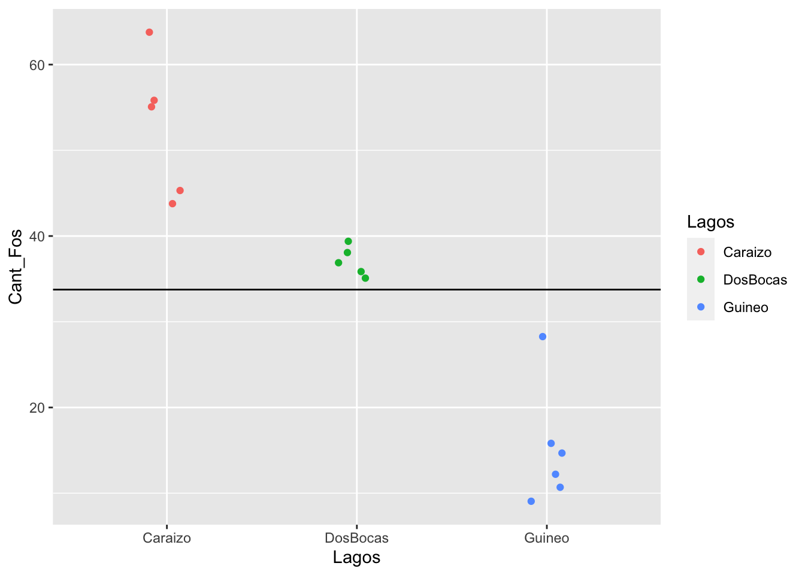

T11_ANOVA
Fecha de la ultima revisión
Chunk para poder cambiar el color del texto
Instalar libreria si es necesario
Activar libreria
library(ggplot2)
library(granova)
library(car)
library(pastecs)
library(multcomp)
library(compute.es)
library(WRS2) ANOVA= Analisis of Variance
3 o más grupos, k >=3
Ho: G1=G2=G3, p = 0.05 Ha: Por lo menos uno de estos grupos no es igual a los demas
Ha: No es G1=/G2=/G3
Un ejemplo G1=G2, G1=G3, pero G2 no es igual a G3….. la Ho se rechaza
La razon principal no usamos t-test,
t-test 1= p=.05 t-test 2= p=.05 t-test 3= p=.05
p=0.05
Si repite el exp. 100, es probable que 5 la prueba no lo va a dar el resultado correcto.
Para determinar la probabilidad de error tipo uno o alpha, se puede usar la siguiente formalua
P(at least one significant result) = 1 − P(no significant results) = 1−(1−0.05)i ≈ 0.64
Vamoa a asumir que tenemos que hacer multiples comparación
Crear un conjunto de datos
Aqui observamos la cantidad de fosforo por parte de million observado en la misma especie de planta cerca tres lagos de Puerto Rico . Los datos son ficticios es para demostrar
id<-(1:16)
Cant_Fos<-c(55,56,64,45,44,
37,36,35,38,39,
12,28,15,16,11,9)
Lagos<-c(rep(1,5),rep(2,5), rep(3,6))
Lagos<-factor(Lagos, levels = c(1:3),
labels = c("Caraizo", "DosBocas", "Guineo"))
fosforo<-data.frame(id,Cant_Fos,Lagos)
fosforo## id Cant_Fos Lagos
## 1 1 55 Caraizo
## 2 2 56 Caraizo
## 3 3 64 Caraizo
## 4 4 45 Caraizo
## 5 5 44 Caraizo
## 6 6 37 DosBocas
## 7 7 36 DosBocas
## 8 8 35 DosBocas
## 9 9 38 DosBocas
## 10 10 39 DosBocas
## 11 11 12 Guineo
## 12 12 28 Guineo
## 13 13 15 Guineo
## 14 14 16 Guineo
## 15 15 11 Guineo
## 16 16 9 GuineoHacer un gráfico de los datos. Si calculamos el promedio de todos los valores de “Y” y lo graficamos, vemos que muchos de los valores del municipio “b” son muy por debajo los valores de la linea y muchos de los valores del municipio “u” son muy por encima.
ggplot(fosforo, aes(Lagos, Cant_Fos, colour=Lagos))+
geom_jitter(width = 0.11)+
geom_hline(yintercept = mean_fosforo)
Otra alternativa de verlo es ver la diferencias entre el valor de la “y” y el promedio, o sea los residuales. Nota que esto se parece a la grafica de residuales de la regresión lineal. Vimos tambien este tipo de grafico para la prueba de t.
plot(1:16, Cant_Fos, ylim=c(0, 60), ylab="y", xlab = "order", pch=21, bg="red")
abline(h=mean(Cant_Fos), col="blue")
for(i in 1:16) lines(c(i,i), c(mean(Cant_Fos), Cant_Fos[i]), col="green")#plot(1:36, dist, ylim=c(0, 100), ylab="y", xlab = "order", pch=21, bg="red")
#abline(h=mean(dist), col="blue")
#for(i in 1:36) lines(c(i,i), c(mean(dist), dist[i]), col="green")Ahora vamos a separar la grafica y ver los residuales por grupo, en otra palabra, cual son los residuales entre los valores y el promedio dentro de los mismos grupos. Se observa en este caso que hay mucho menos varianza entre los valores de un mismo grupo.
plot(1:16, Cant_Fos, ylim=c(0, 70), ylab="y", xlab = "order", pch=21, bg="black")
abline(h=mean(Cant_Fos[Lagos=="Caraizo"]), col="blue")
abline(h=mean(Cant_Fos[Lagos=="DosBocas"]), col="red")
abline(h=mean(Cant_Fos[Lagos=="Guineo"]), col="orange")
index<- 1:length(Cant_Fos)
for (i in 1:length(index)){
if(Lagos[i]=="Caraizo")
lines(c(index[i], index[i]), c(mean(Cant_Fos[Lagos=="Caraizo"]), Cant_Fos[i]), col="blue")
else if (Lagos[i]=="Guineo")
lines(c(index[i], index[i]), c(mean(Cant_Fos[Lagos=="Guineo"]), Cant_Fos[i]), col="orange")
else
lines(c(index[i], index[i]), c(mean(Cant_Fos[Lagos=="DosBocas"]), Cant_Fos[i]), col="red")
} Ejemplo de grupos donde los promedios no van a ser diferentes
creamos un set de datos
id<-(1:16)
Cant_Fos<-c(65,66,64,65,64,
56,58,65,49,43,
21,24,22,21,21,21)
Lagos<-c(rep(1,5),rep(2,5), rep(3,6))
Lagos<-factor(Lagos, levels = c(1:3),
labels = c("Caraizo", "DosBocas", "Guineo"))
fosforo2<-data.frame(id,Cant_Fos,Lagos)
attach(fosforo2)plot(1:16, Cant_Fos, ylim=c(0, 70), ylab="y", xlab = "order", pch=21, bg="black")
abline(h=mean(Cant_Fos[Lagos=="Caraizo"]), col="blue")
abline(h=mean(Cant_Fos[Lagos=="DosBocas"]), col="red")
abline(h=mean(Cant_Fos[Lagos=="Guineo"]), col="orange")
index<- 1:length(Cant_Fos)
for (i in 1:length(index)){
if(Lagos[i]=="Caraizo")
lines(c(index[i], index[i]), c(mean(Cant_Fos[Lagos=="Caraizo"]), Cant_Fos[i]), col="blue")
else if (Lagos[i]=="Guineo")
lines(c(index[i], index[i]), c(mean(Cant_Fos[Lagos=="Guineo"]), Cant_Fos[i]), col="orange")
else
lines(c(index[i], index[i]), c(mean(Cant_Fos[Lagos=="DosBocas"]), Cant_Fos[i]), col="red")
} Graficar de los datos
NOTA Aqui que tengo 1. los datos con geom_point 2. los promedios con stat_summary 3. Una linea que une los promedios con stat_summary
library(ggplot2)
ggplot(fosforo, aes(x=Lagos, y=Cant_Fos))+
geom_point()+
stat_summary(fun.y = mean, geom = "point", size = 1,
aes(group=1), colour = "#FF6633")+
stat_summary(fun.y = mean, geom = "line", size = 1,
aes(group=1), colour = "red")
Crear un data frame de los resultados con el package “Rmisc” y la función “summarySE”
## id Cant_Fos Lagos
## 1 1 55 Caraizo
## 2 2 56 Caraizo
## 3 3 64 Caraizo
## 4 4 45 Caraizo
## 5 5 44 Caraizo
## 6 6 37 DosBocas## Lagos N Cant_Fos sd se ci
## 1 Caraizo 5 52.80000 8.348653 3.7336309 10.366221
## 2 DosBocas 5 37.00000 1.581139 0.7071068 1.963243
## 3 Guineo 6 15.16667 6.794606 2.7738862 7.13050152.8000000 3.7336309 10.3662213
Graficar con nuestro nuevo data frame “sum”.
Nota, se = standard error, el error del promedio (donde esta el promedio?) sd = la desviación estandard, para evaluar el error de la población (donde esta la distribución de los datos?) ci = el intervalo de confianza
95% intervalo de confianza del promedioggplot(sum, aes(x=Lagos,
y=Cant_Fos)) +
geom_point(colour="blue")+
geom_errorbar(aes(ymin=Cant_Fos-2*se,
ymax=Cant_Fos+2*se),
width=.2, size=0.7) ymin=Cant_Fos-2se, ymax=Cant_Fos+2se
ymin=Cant_Fos-2se, ymax=Cant_Fos+2se
Esto dara el intervalo de confianza de 95%
Descriptive statistics
## fosforo$Lagos: Caraizo
## nbr.val nbr.null nbr.na min max range
## 5.0000000 0.0000000 0.0000000 44.0000000 64.0000000 20.0000000
## sum median mean SE.mean CI.mean.0.95 var
## 264.0000000 55.0000000 52.8000000 3.7336309 10.3662213 69.7000000
## std.dev coef.var
## 8.3486526 0.1581184
## ------------------------------------------------------------
## fosforo$Lagos: DosBocas
## nbr.val nbr.null nbr.na min max range
## 5.00000000 0.00000000 0.00000000 35.00000000 39.00000000 4.00000000
## sum median mean SE.mean CI.mean.0.95 var
## 185.00000000 37.00000000 37.00000000 0.70710678 1.96324316 2.50000000
## std.dev coef.var
## 1.58113883 0.04273348
## ------------------------------------------------------------
## fosforo$Lagos: Guineo
## nbr.val nbr.null nbr.na min max range
## 6.000000 0.000000 0.000000 9.000000 28.000000 19.000000
## sum median mean SE.mean CI.mean.0.95 var
## 91.000000 13.500000 15.166667 2.773886 7.130501 46.166667
## std.dev coef.var
## 6.794606 0.447996#Levene’s test (test of equality of variance), to test for homogeneity of variance among groups
La prueba de ANOVA
## Df Sum Sq Mean Sq F value Pr(>F)
## Lagos 3 22164 7388 184.8 6.58e-11 ***
## Residuals 13 520 40
## ---
## Signif. codes: 0 '***' 0.001 '**' 0.01 '*' 0.05 '.' 0.1 ' ' 1#Here
# Complete model
summary.lm(LagosModel) # Nota que los coefficientes son los promedios, comparan con la tabla ariba. ##
## Call:
## aov(formula = Cant_Fos ~ Lagos - 1, data = fosforo)
##
## Residuals:
## Min 1Q Median 3Q Max
## -8.8000 -3.4167 -0.0833 2.0500 12.8333
##
## Coefficients:
## Estimate Std. Error t value Pr(>|t|)
## LagosCaraizo 52.800 2.827 18.674 9.01e-11 ***
## LagosDosBocas 37.000 2.827 13.086 7.34e-09 ***
## LagosGuineo 15.167 2.581 5.876 5.45e-05 ***
## ---
## Signif. codes: 0 '***' 0.001 '**' 0.01 '*' 0.05 '.' 0.1 ' ' 1
##
## Residual standard error: 6.322 on 13 degrees of freedom
## Multiple R-squared: 0.9771, Adjusted R-squared: 0.9718
## F-statistic: 184.8 on 3 and 13 DF, p-value: 6.58e-11


PRUEBA de POST HOC (Se hace solamente si se rechaza la hipotesis nula de la prueba de ANOVA)
- the Bonferroni test
- Tukey test
pairwise.t.test(fosforo$Cant_Fos, fosforo$Lagos, p.adjust.method = "bonferroni") # Nota aqui se usa los datos originales, el error de todos las pruenas se limita a 5%. ##
## Pairwise comparisons using t tests with pooled SD
##
## data: fosforo$Cant_Fos and fosforo$Lagos
##
## Caraizo DosBocas
## DosBocas 0.00497 -
## Guineo 6.6e-07 0.00022
##
## P value adjustment method: bonferronilibrary(multcomp)
postHocs.1<-glht(LagosModel, linfct = mcp(Lagos = "Tukey")) # nota que aqui se usa el modelo
summary(postHocs.1)##
## Simultaneous Tests for General Linear Hypotheses
##
## Multiple Comparisons of Means: Tukey Contrasts
##
##
## Fit: aov(formula = Cant_Fos ~ Lagos - 1, data = fosforo)
##
## Linear Hypotheses:
## Estimate Std. Error t value Pr(>|t|)
## DosBocas - Caraizo == 0 -15.800 3.999 -3.951 0.00466 **
## Guineo - Caraizo == 0 -37.633 3.828 -9.830 < 0.001 ***
## Guineo - DosBocas == 0 -21.833 3.828 -5.703 < 0.001 ***
## ---
## Signif. codes: 0 '***' 0.001 '**' 0.01 '*' 0.05 '.' 0.1 ' ' 1
## (Adjusted p values reported -- single-step method)SUPER HEROES and INJURIES
library(readr)
Superhero <- read_csv("~/Google Drive/Biometry/Biometria 2017/Data_FILES/Superhero.csv")
tail(Superhero)## # A tibble: 6 x 3
## BLANK hero injury
## <lgl> <dbl> <dbl>
## 1 NA 4 30
## 2 NA 4 30
## 3 NA 4 30
## 4 NA 4 41
## 5 NA 4 18
## 6 NA 4 25####Rename the categories with super hero names
#Superhero
Superhero$heronames<-factor(Superhero$hero, levels = c(1:4),
labels = c("Spiderman","Superman", "Hulk", "Ninja Turtle"))
Superhero## # A tibble: 30 x 4
## BLANK hero injury heronames
## <lgl> <dbl> <dbl> <fct>
## 1 NA 1 51 Spiderman
## 2 NA 1 31 Spiderman
## 3 NA 1 58 Spiderman
## 4 NA 1 20 Spiderman
## 5 NA 1 47 Spiderman
## 6 NA 1 37 Spiderman
## 7 NA 1 49 Spiderman
## 8 NA 1 40 Spiderman
## 9 NA 2 69 Superman
## 10 NA 2 32 Superman
## # … with 20 more rows- Evaluar la distribución de los datos de respuestas (los en Y)
- Evaluar la homogeneidad de varianza
- Visualizar los datos Puntos y promedios y intervalo de confianza
- Hacer la prueba de ANOVA con aov()
- Evaluar la figura de residuales
- Evaluar la gráfica de qq, para la normalidad
- Hacer la prueba de post-hoc si es necesario!!!!!
library(ggplot2)
line <- ggplot(Superhero, aes(heronames, injury))
line +geom_point()+
stat_summary(fun.y = mean, geom = "line", size = 1,
aes(group=1), colour = "#FF6633")+
stat_summary(fun.y = mean, geom = "point", size = 3,
aes(group=1), colour = "red")
Homogeneity of variance
## Levene's Test for Homogeneity of Variance (center = median)
## Df F value Pr(>F)
## group 3 0.827 0.491
## 26library(Rmisc) # this is a function to create
#a data frame of summary data
sum2 = summarySE(Superhero,
measurevar="injury",
groupvars=c("heronames"))
sum2## heronames N injury sd se ci
## 1 Spiderman 8 41.62500 12.211675 4.317479 10.209216
## 2 Superman 6 60.33333 17.851237 7.287737 18.733724
## 3 Hulk 8 35.37500 13.383759 4.731873 11.189102
## 4 Ninja Turtle 8 26.25000 8.154753 2.883141 6.817544ggplot(sum2, aes(x=heronames,
y=injury)) +
geom_errorbar(aes(ymin=injury-2*se,
ymax=injury+2*se),
width=.2, size=0.7)+
geom_point(colour="blue")
- Hacer la prueba de ANOVA con aov()
## Df Sum Sq Mean Sq F value Pr(>F)
## heronames 3 4181 1393.5 8.317 0.000483 ***
## Residuals 26 4357 167.6
## ---
## Signif. codes: 0 '***' 0.001 '**' 0.01 '*' 0.05 '.' 0.1 ' ' 1##
## Call:
## aov(formula = injury ~ heronames, data = Superhero)
##
## Residuals:
## Min 1Q Median 3Q Max
## -28.333 -8.250 1.688 7.562 24.667
##
## Coefficients:
## Estimate Std. Error t value Pr(>|t|)
## (Intercept) 41.625 4.577 9.095 1.47e-09 ***
## heronamesSuperman 18.708 6.991 2.676 0.0127 *
## heronamesHulk -6.250 6.472 -0.966 0.3431
## heronamesNinja Turtle -15.375 6.472 -2.376 0.0252 *
## ---
## Signif. codes: 0 '***' 0.001 '**' 0.01 '*' 0.05 '.' 0.1 ' ' 1
##
## Residual standard error: 12.94 on 26 degrees of freedom
## Multiple R-squared: 0.4897, Adjusted R-squared: 0.4308
## F-statistic: 8.317 on 3 and 26 DF, p-value: 0.0004828- Evaluar la figura de residuales
- Evaluar la grafica de qq


- Hacer la prueba de post-hoc si es necesario!!!!!
##
## Pairwise comparisons using t tests with pooled SD
##
## data: Superhero$injury and Superhero$heronames
##
## Spiderman Superman Hulk
## Superman 0.07632 - -
## Hulk 1.00000 0.00851 -
## Ninja Turtle 0.15109 0.00028 1.00000
##
## P value adjustment method: bonferroni##
## Simultaneous Tests for General Linear Hypotheses
##
## Multiple Comparisons of Means: Tukey Contrasts
##
##
## Fit: aov(formula = injury ~ heronames, data = Superhero)
##
## Linear Hypotheses:
## Estimate Std. Error t value Pr(>|t|)
## Superman - Spiderman == 0 18.708 6.991 2.676 0.05750 .
## Hulk - Spiderman == 0 -6.250 6.472 -0.966 0.76953
## Ninja Turtle - Spiderman == 0 -15.375 6.472 -2.376 0.10706
## Hulk - Superman == 0 -24.958 6.991 -3.570 0.00706 **
## Ninja Turtle - Superman == 0 -34.083 6.991 -4.875 < 0.001 ***
## Ninja Turtle - Hulk == 0 -9.125 6.472 -1.410 0.50419
## ---
## Signif. codes: 0 '***' 0.001 '**' 0.01 '*' 0.05 '.' 0.1 ' ' 1
## (Adjusted p values reported -- single-step method)